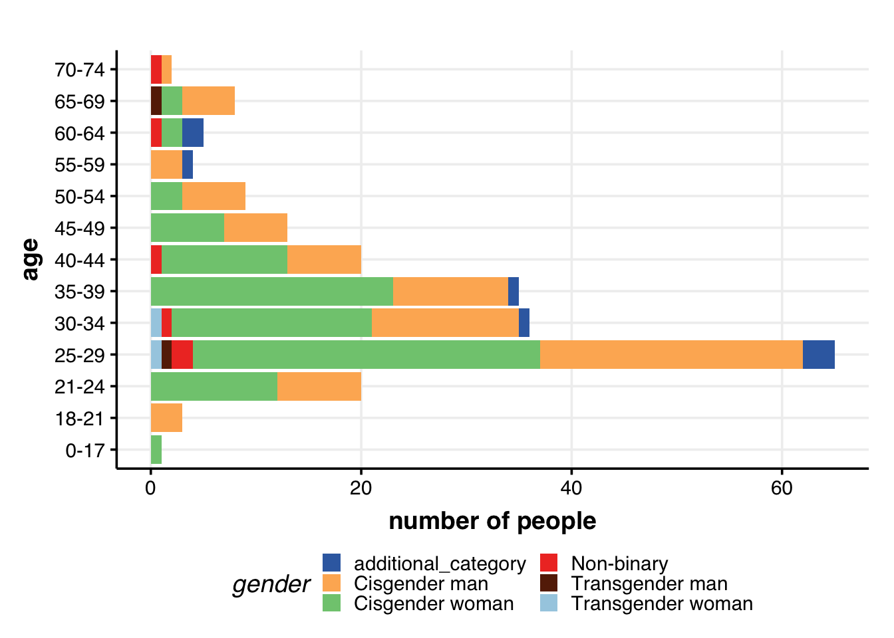
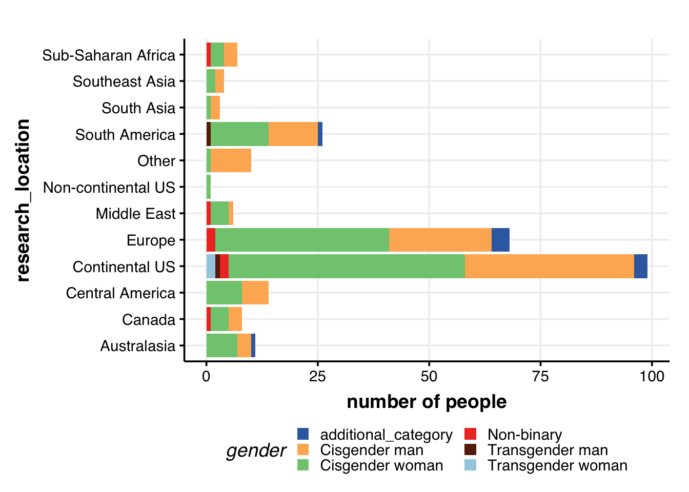
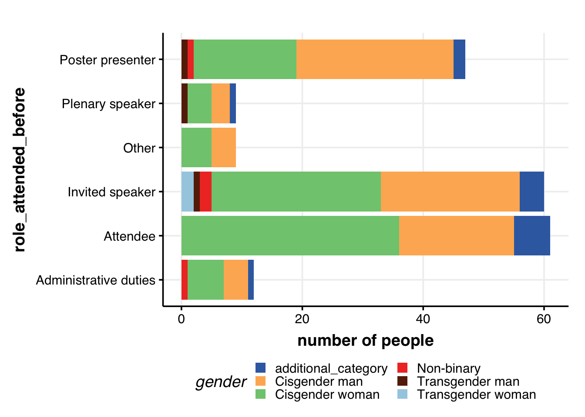
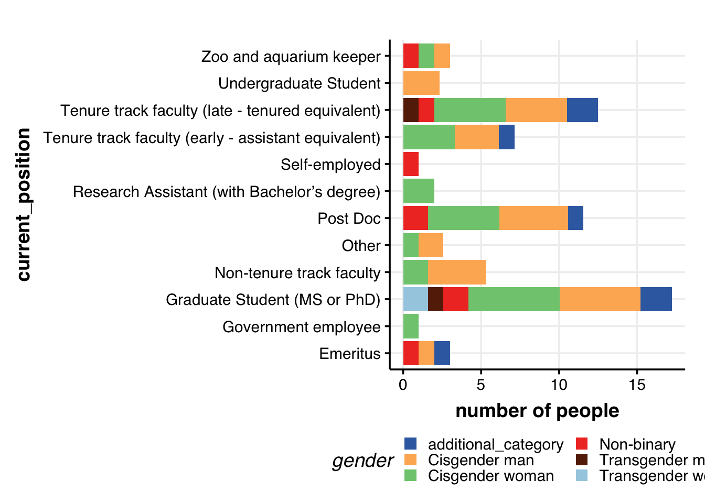
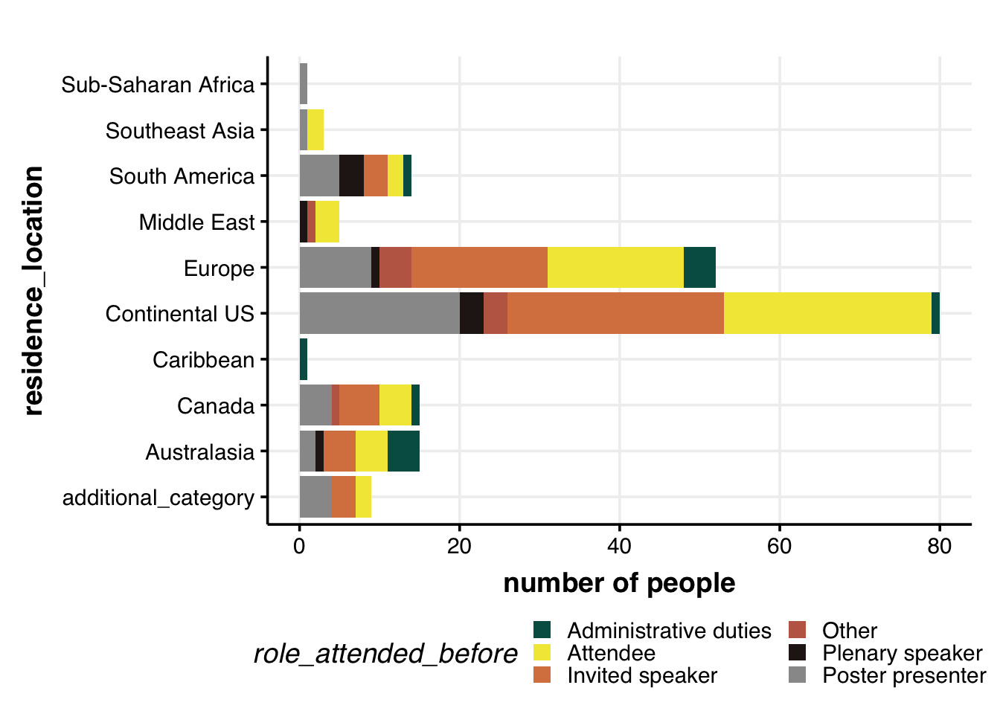
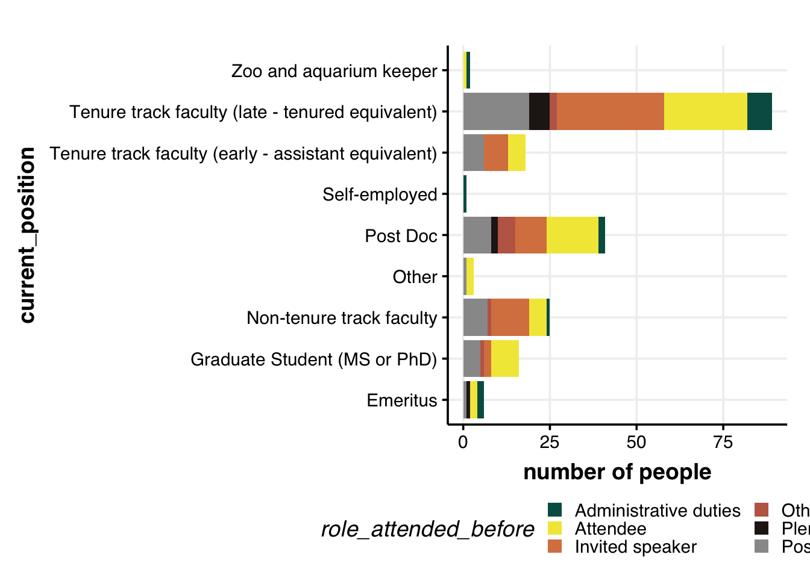
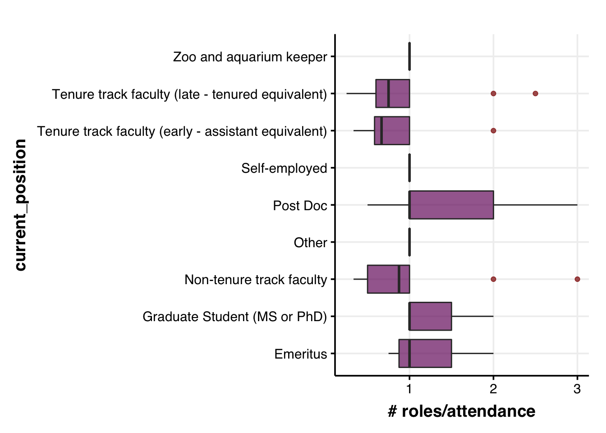
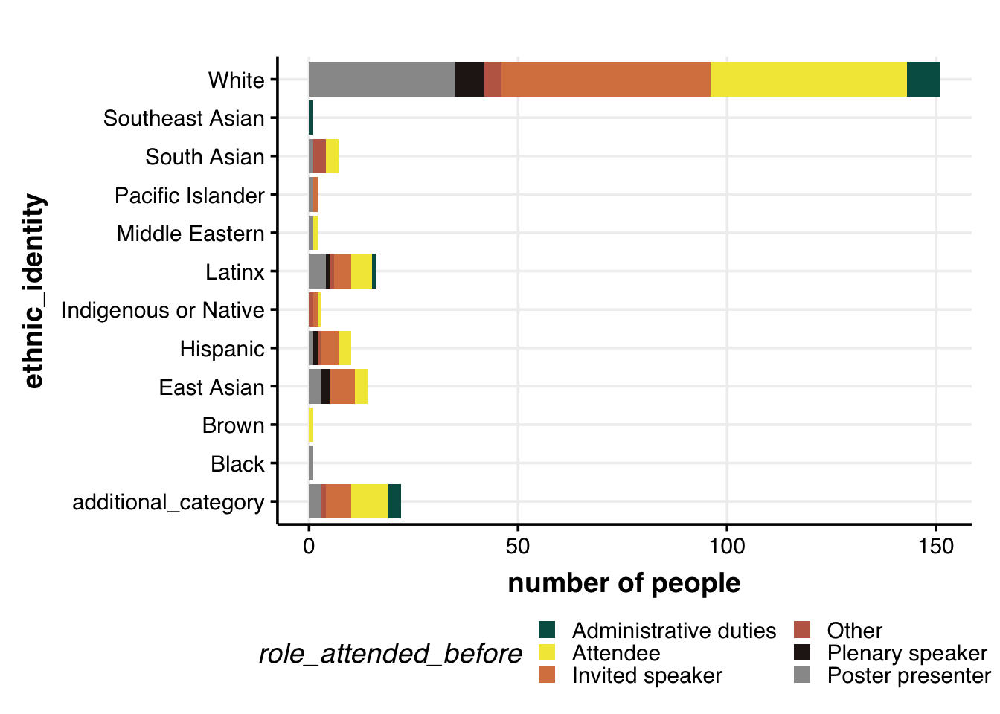

What is this document?
The goal:
Perform a rapid exploratory analyses of the demography data obtained from the survey performed on the audience interested in or/and attending the upcoming IUSSI international conference in 2022, San Diego.
Let’s take a look at few rows and columns of the raw data.
| time_of_entry | age | gender | add_gender | sex_orientation | add_sex_orientation | residence_location | |
|---|---|---|---|---|---|---|---|
| 10 | 2022/02/11 11:48:02 AM EST | 25-29 years old | Cisgender man | NA | Heterosexual | NA | Continental US |
| 11 | 2022/02/11 6:05:24 PM EST | 25-29 years old | Cisgender woman | NA | Bisexual | NA | Continental US |
| 12 | 2022/02/11 8:10:38 PM EST | 35-39 years old | Cisgender woman | NA | Heterosexual | NA | Continental US |
| 13 | 2022/02/13 12:12:18 PM EST | 21-24 years olf | Cisgender man | NA | Homosexual (gay/lesbian) | NA | Europe |
| research_location | ethnic_identity | add_ethnic_identity | religious_identity | add_religious_identity | disability_identity | |
|---|---|---|---|---|---|---|
| 10 | Continental US | Southeast Asian;Brown | NA | I am not religious | NA | I have no disability/impairment |
| 11 | Australasia | Hispanic;Latinx;Brown | NA | Prefer not to respond | NA | NA |
| 12 | Continental US | Black | NA | Christianity | NA | I have no disability/impairment |
| 13 | Europe | White | NA | I am not religious | NA | I have no disability/impairment |
Column name: Description
Get the data into a tidy format
## Tidy and save data
dat <-
raw.dat %>% as_tibble() %>%
## remove columns that you do not want
select(-time_of_entry) %>%
select(-starts_with("add")) %>%
## add a unique ID for each person
rownames_to_column("ID") %>%
## AGE
mutate(age = str_split_fixed(age, " ", n=2)[,1]) %>%
mutate(age = ifelse(age %in% c("","Prefer"), other.var, age)) %>%
mutate(age = as.factor(age)) %>%
# ## Plot: AGE
# group_by(age) %>%
# summarise(num = n()) %>%
# ##
# ggplot(aes(x=age, y=num)) +
# geom_point() +
# coord_flip() +
# theme_Publication()
## GENDER
# there are two entries that contains the following two responses for gender identity
# c("Cisgender woman;Prefer not to respond", "Transgender man;Cisgender woman")),
# five entries that stated "Prefer not to respond", and one which is NA.
# Rename all to "Other"
mutate(gender = ifelse(!gender %in% c("Cisgender man", "Cisgender woman", "Non-binary",
"Transgender man", "Transgender woman"), other.var, gender)) %>%
mutate(gender = as.factor(gender)) %>%
# ## Plot: GENDER
# group_by(gender) %>%
# summarise(num = n()) %>%
# na.omit() %>%
# ##
# ggplot(aes(x=gender, y=num/sum(num)*100)) +
# geom_point() +
# coord_flip() +
# theme_Publication()
## sex_orientation
mutate(sex_orientation = ifelse(sex_orientation %in% c("Additional identity not listed? (Please click next and share)","Prefer not to respond"), other.var, sex_orientation)) %>%
mutate(sex_orientation = as.factor(sex_orientation)) %>%
## residence_location
mutate(residence_location = ifelse(residence_location %in% c("Central America;Other",
"Continental US;South Asia",
"Europe;Middle East",
"Europe;Southeast Asia",
"Other"), other.var, residence_location)) %>%
mutate(residence_location = as.factor(residence_location)) %>%
## research location
# filter(research_location %in% c("Central America;Continental US", "Europe;South America")) %>%
separate_rows(research_location, sep = ";") %>%
mutate(research_location = as.factor(research_location)) %>%
## ethnic_identity
separate_rows(ethnic_identity, sep = ";") %>%
mutate(ethnic_identity = ifelse(ethnic_identity %in% c("A race or ethnicity not listed",
"Prefer not to respond"),
other.var, ethnic_identity)) %>%
mutate(ethnic_identity = as.factor(ethnic_identity)) %>%
## religious_identity
mutate(religious_identity = ifelse(religious_identity %in% c("An additional affiliation not listed",
"Prefer not to respond"),
other.var, religious_identity)) %>%
mutate(religious_identity = as.factor(religious_identity)) %>%
## disability_identity
separate_rows(disability_identity, sep = ";") %>%
mutate(disability_identity = as.factor(disability_identity)) %>%
## written_english
mutate(written_english = as.factor(written_english)) %>%
## spoken_english
mutate(spoken_english = as.factor(spoken_english)) %>%
## children_responsibility
mutate(children_responsibility = as.factor(children_responsibility)) %>%
## adult_responsibility
mutate(adult_responsibility = ifelse(adult_responsibility %in% c("Prefer not to respond", "Other"),
other.var, adult_responsibility)) %>%
mutate(adult_responsibility = as.factor(adult_responsibility)) %>%
## funds_for_care_inhibit
mutate(funds_for_care_inhibit = as.factor(funds_for_care_inhibit)) %>%
## firstgen
mutate(firstgen = as.factor(firstgen)) %>%
## current position
separate_rows(current_position, sep = ";") %>%
mutate(current_position = as.factor(current_position)) %>%
## which_attended_before
separate_rows(which_attended_before, sep = ";") %>%
mutate(which_attended_before = as.factor(which_attended_before)) %>%
## role_attended_before
separate_rows(role_attended_before, sep = ";") %>%
mutate(role_attended_before = as.factor(role_attended_before)) %>%
## current_institute_desc
separate_rows(current_institute_desc, sep = ";") %>%
mutate(current_institute_desc = as.factor(current_institute_desc)) %>%
## barriers_what_degree
mutate(barriers_what_degree = as.factor(barriers_what_degree)) %>%
## barriers_which
separate_rows(barriers_which, sep = ";") %>%
mutate(barriers_which = as.factor(barriers_which))
# ## get a glimpse of the tidy data
# dat[10:13,1:7] %>%
# kable() %>%
# kable_styling(bootstrap_options = c("striped"), full_width = F, position = "center", latex_options = "scaled_down")
#
# dat[10:13,8:13] %>%
# kable() %>%
# kable_styling(bootstrap_options = c("striped"), full_width = F, position = "center", latex_options = "scaled_down")## Use this code chunk to define paramaters, such as color palettes and such
## COLOR
# role attended before
roles.color <- c("#005C53", "#F2E744", "#D9814E", "#BF6854", "#261B1A", "grey60")## AGE + GENDER
dat %>%
# remove the rows with no age/gender info
filter(age != other.var) %>%
filter(!is.na(gender)) %>%
# filter(gender != "Other") %>%
# tally the number of people in a given age group for a given gender
distinct(ID, age, gender) %>%
group_by(age, gender) %>%
summarize(num=n()) %>%
## Plot: AGE + GENDER
ggplot(aes(x=age, y=num, fill=gender, group=gender)) +
labs(y="number of people") +
# geom_hline(yintercept = 5, col="grey60", alpha=0.7, size=1) +
geom_bar(position="stack", stat="identity") +
coord_flip() +
theme_Publication() +
scale_colour_Publication() +
scale_fill_Publication() +
guides(fill = guide_legend(nrow = 3))
# Residence location & gender
dat %>%
# filter(!residence_location %in% c("Other")) %>%
filter(!is.na(residence_location)) %>%
filter(!is.na(gender)) %>%
# filter(gender != "Other") %>%
distinct(ID, residence_location, gender) %>%
group_by(residence_location, gender) %>%
summarize(num = n()) %>%
ggplot(aes(x=residence_location, y=num, fill=gender, group=gender)) +
labs(y="number of people") +
# geom_hline(yintercept = 5, col="grey60", alpha=0.7, size=1) +
geom_bar(position="stack", stat="identity") +
coord_flip() +
theme_Publication() +
scale_colour_Publication() +
scale_fill_Publication() +
guides(fill = guide_legend(nrow = 3))## Plot: research_location + gender
dat %>%
filter(!is.na(research_location)) %>%
filter(!is.na(gender)) %>%
# filter(gender != "Other") %>%
distinct(ID, research_location, gender) %>%
group_by(research_location, gender) %>%
summarize(num = n()) %>%
ggplot(aes(x=research_location, y=num, fill=gender, group=gender)) +
geom_bar(position="stack", stat="identity", size=2) +
labs(y="number of people") +
# geom_hline(yintercept = 5, col="grey60", alpha=0.7, size=1) +
coord_flip() +
theme_Publication() +
scale_colour_Publication() +
scale_fill_Publication() +
guides(fill = guide_legend(nrow = 3))
A bunch of folks perform research in Central America, but there seems to be no representation from folks living in Central America. There is, of course, the possibility that folks residing in Central America did not take the survey.
dat %>%
# remove the rows with no info
filter(!is.na(role_attended_before)) %>%
filter(!is.na(gender)) %>%
# filter(gender != "Other") %>%
distinct(ID, role_attended_before, gender) %>%
group_by(role_attended_before, gender) %>%
summarize(num = n()) %>%
## Plot: research_location + gender
ggplot(aes(x=role_attended_before, y=num, fill=gender, group=gender)) +
geom_bar(position="stack", stat="identity", size=2) +
labs(y="number of people") +
# geom_hline(yintercept = 5, col="grey60", alpha=0.7, size=1) +
coord_flip() +
theme_Publication() +
scale_colour_Publication() +
scale_fill_Publication() +
guides(fill = guide_legend(nrow = 3))
dat %>%
filter(!is.na(current_position)) %>%
filter(!is.na(gender)) %>%
# filter(gender != "Other") %>%
distinct(ID, current_position, gender) %>%
group_by(current_position, gender) %>%
summarize(num = n()) %>%
ggplot(aes(x=current_position, y=log2(num+1), fill=gender, group=gender)) +
geom_bar(position="stack", stat="identity", size=2) +
labs(y="number of people") +
# geom_hline(yintercept = 5, col="grey60", alpha=0.7, size=1) +
coord_flip() +
theme_Publication() +
scale_colour_Publication() +
scale_fill_Publication() +
guides(fill = guide_legend(nrow = 3))
dat %>%
# remove the rows with no age/gender info
filter(!is.na(role_attended_before)) %>%
filter(!is.na(residence_location)) %>%
# filter(gender != "Other") %>%
distinct(ID, role_attended_before, residence_location) %>%
group_by(role_attended_before, residence_location) %>%
summarize(num = n()) %>%
ggplot(aes(x=residence_location, y=num, fill=role_attended_before, group=role_attended_before)) +
geom_bar(position="stack", stat="identity", size=2) +
labs(y="number of people") +
# geom_hline(yintercept = 5, col="grey60", alpha=0.7, size=1) +
coord_flip() +
theme_Publication() +
scale_colour_Publication() +
# scale_fill_Publication() +
scale_fill_manual(values = roles.color) +
guides(fill = guide_legend(nrow = 3))
dat %>%
# remove the rows with no age/gender info
filter(!is.na(role_attended_before)) %>%
filter(!is.na(current_position)) %>%
# filter(gender != "Other") %>%
distinct(ID, role_attended_before, current_position) %>%
group_by(role_attended_before, current_position) %>%
summarize(num = n()) %>%
## Plot: research_location + gender
ggplot(aes(x=current_position, y=num, fill=role_attended_before, group=role_attended_before)) +
geom_bar(position="stack", stat="identity", size=2) +
labs(y="number of people") +
# geom_hline(yintercept = 5, col="grey60", alpha=0.7, size=1) +
coord_flip() +
theme_Publication() +
scale_colour_Publication() +
scale_fill_manual(values = roles.color) +
guides(fill = guide_legend(nrow = 3))
# to do:
# normalize the number of roles undertaken by a person in past IUSSI
# number of past roles / number of past IUSSI attendedThe above plot might be misleading since the higher number of roles assumed by (activity of) late, tenured Profs might be due to the higher number of previous conferences attened by them. So, it might make sense to have a standardized metric that gives us a better understanding of the activity of each group in IUSSI.
Activity = number of roles assumed (including attendee) / number of IUSSIs attended
id <- character()
num_attended <- numeric()
for (i in 1:length(levels(as.factor(dat$ID)))) {
id[i] <- levels(as.factor(dat$ID))[i]
num_attended[i] <-
dat %>%
filter(ID == id[i]) %>%
# select(which_attended_before)
mutate(which_attended_before=as.character(which_attended_before)) %>%
pull(which_attended_before) %>%
unique() %>%
as.factor() %>%
levels() %>% length() %>%
as.numeric()
}
dummy.dat <- data.frame(ID=id, num_attended=num_attended)
## Add this information to the primary dataset
dat %>%
# add the num_attended column to dat
left_join(dummy.dat, by="ID") %>%
# check to see if it worked
# select(ID, which_attended_before, num_attended) %>% head(20)
# remove the rows with no info
filter(!is.na(role_attended_before)) %>%
filter(!is.na(current_position)) %>%
# filter(gender != "Other") %>%
select(ID, current_position, role_attended_before, num_attended) %>%
# head(20)
distinct(ID, role_attended_before, current_position, num_attended) %>%
group_by(ID, current_position, num_attended) %>%
summarize(num_roles = n()) %>%
arrange(as.numeric(ID)) %>%
# calculate activity
mutate(activity = num_roles/num_attended) %>%
## Plot: research_location + gender
ggplot(aes(x=current_position, y=activity)) +
# geom_bar(position="stack", stat="identity", size=2) +
geom_boxplot(alpha=0.7, outlier.colour = "darkred", fill=viridis::inferno(10)[4]) +
labs(y="# roles/attendance") +
# geom_hline(yintercept = 5, col="grey60", alpha=0.7, size=1) +
coord_flip() +
theme_Publication() +
scale_colour_Publication() +
scale_fill_Publication() +
# scale_fill_manual(values = roles.color) +
guides(fill = guide_legend(nrow = 8)) +
theme(legend.position = "none")
dat %>%
# remove the rows with no age/gender info
filter(!is.na(role_attended_before)) %>%
filter(!is.na(ethnic_identity)) %>%
# filter(gender != "Other") %>%
distinct(ID, role_attended_before, ethnic_identity) %>%
group_by(role_attended_before, ethnic_identity) %>%
summarize(num = n()) %>%
## Plot: research_location + gender
ggplot(aes(x=ethnic_identity, y=num, fill=role_attended_before, group=role_attended_before)) +
geom_bar(position="stack", stat="identity", size=2) +
labs(y="number of people") +
# geom_hline(yintercept = 5, col="grey60", alpha=0.7, size=1) +
coord_flip() +
theme_Publication() +
scale_colour_Publication() +
scale_fill_manual(values = roles.color) +
guides(fill = guide_legend(nrow = 3))
Check which groups are over/under-represented at IUSSI, and for which activities.
# load the GeneOverlap package to perform pairwise Fisher's exact test
library(GeneOverlap)
# which variable do you need to use for the x-axis
names.x <- c("gender",
# "age",
"residence_location", "research_location",
"current_position", "ethnic_identity")
# initialize a list to hold all the possible groups that we want to plot
# on the x-axis
list.x <- list()
for (j in 1:length(names.x)) {
# what are the different groups in the filtering column
groups.x <- dat %>%
pull(names.x[j]) %>%
as.factor() %>%
levels()
# what is the name of the filtering column
var <- names.x[[j]]
list.sub <- list()
for (i in 1:length(groups.x)) {
list.sub[[i]] <-
dat %>% filter(.data[[var]] %in% groups.x[[i]] ) %>% pull(ID) %>% unique()
names(list.sub)[i] <- groups.x[[i]] %>% as.character()
}
# Save the results for the filtering column and name the different lists
list.x[[j]] <- list.sub
}
## DO THE SAME FOR THE Y-AXIS
names.y <- c("role_attended_before")
list.y <- list()
groups.y <- dat %>%
pull(names.y) %>%
as.factor() %>%
levels()
var <- names.y
list.sub <- list()
for (i in 1:length(groups.y)) {
list.sub[[i]] <-
dat %>% filter(.data[[var]] %in% groups.y[[i]] ) %>% pull(ID) %>% unique()
names(list.sub)[i] <- groups.y[[i]] %>% as.character()
}
# Save the results for the filtering column and name the different lists
list.y <- list.sub
## Run the pairwise Fisher's tests ##
## What is the total sample size
nFolks <- dat %>% pull(ID) %>% unique() %>% length()
## Remove the groups that contain less than 5 individuals
list.y <- list.y[sapply(list.y, length)>=5]
for (i in 1:length(list.x)) {
# remove for x
list.x[[i]] <- list.x[[i]][sapply(list.x[[i]], length)>=5]
if (i==4) {
names(list.x[[i]]) <- names(list.x[[i]]) %>% str_sub(end=9)
gom <- newGOM(list.y, list.x[[i]],
nFolks)
}
## Let's perform the pairwise Fisher's exact test
gom <- newGOM(list.x[[i]], list.y,
nFolks)
png(paste0(path_to_repo,
"images/", folder.name,
names.x[i],"_v_",names.y,"_gom.png"),
width = 30, height = 20, units = "cm", res = 300)
drawHeatmap(gom,
# adj.p=T,
cutoff=0.05,
what="odds.ratio",
# what="Jaccard",
log.scale = T,
grid.col="Oranges",
note.col="black")
trash <- dev.off()
}The goal is to perform enrichment analyses (using hypergeometric analyses) to identify under (or over) represented groups (based on gender, ethnicity, etc) in different activities (roles) at IUSSI.
We found several overrepresented groups for specific roles. The results are provided in the table/figure below.
source(paste0(path_to_repo,"functions/underrepresentation_analyses.R"))
## Format the data
bg.dat <-
dat %>%
select(ID, role_attended_before) %>%
group_by(ID) %>%
summarize(role_attended_before = str_c(role_attended_before, collapse = "; ")) %>%
ungroup()
results.list <- list()
k <- 1
# get a list of all gender IDs
for (i in 1:length(list.x)) {
names.vars <- names(list.x[[i]])
for (j in 1:length(names.vars)) {
results.list[[k]] <-
list.x[[i]][[j]] %>%
check_under(.,
bg.file = bg.dat,
what = paste0(names.x[[i]],": ",names.vars[[j]]),
atleast = 3)
k <- k+1
}
}
bind_rows(results.list, .id = "column_label") %>%
dplyr::select(-column_label) %>%
as_tibble() %>%
filter(adj_pVal < 0.05) %>%
mutate(adj_pVal = round(adj_pVal,3)) %>%
filter(over_under=="over") %>%
filter(what_desc != other.var) %>%
filter(annot_term != "no_annot") %>%
select(annot_term:adj_pVal) %>%
arrange(annot_term, adj_pVal) %>%
DT::datatable()And, here are the results as a heatmap.
results.dat <-
bind_rows(results.list, .id = "column_label") %>%
dplyr::select(-column_label) %>%
as_tibble() %>%
filter(adj_pVal < 0.05) %>%
mutate(adj_pVal = round(adj_pVal,3)) %>%
filter(over_under=="over") %>%
filter(what_desc != other.var) %>%
filter(annot_term != "no_annot") %>%
select(annot_term:adj_pVal) %>%
arrange(annot_term, adj_pVal)
mat <-
results.dat %>%
select(-over_under) %>%
pivot_wider(names_from = "what_desc",
values_from = "adj_pVal",
values_fn = list(adj_pVal = min)) %>%
as.data.frame() %>%
column_to_rownames("annot_term") %>%
as.matrix()
# Plot the matrix
### note:
### make sure the library "plot.matrix" is loaded
### see here for more params: https://cran.r-project.org/web/packages/plot.matrix/vignettes/plot.matrix.html
png(paste0(path_to_repo,
"images/", folder.name,
"enrichement_results.png"),
width = 30, height = 20, units = "cm", res = 300)
par(mar=c(10.1, 16.1, 4.1, 6.1))
mat %>%
t() %>%
plot(.,
# border=NA,
col=viridis::viridis(3),
spacing.key=1.5,
fmt.key="%.3f",
xlab = "",
ylab = "",
axis.col=list(side=1, las=2), axis.row = list(side=2, las=1))
trash <- dev.off()Results of the enrichment test; colors indicate p-values returned by the hypergeometric test. Lower p-values suggest possible over-representation.